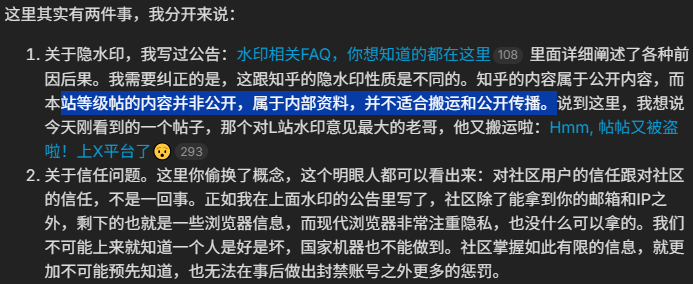
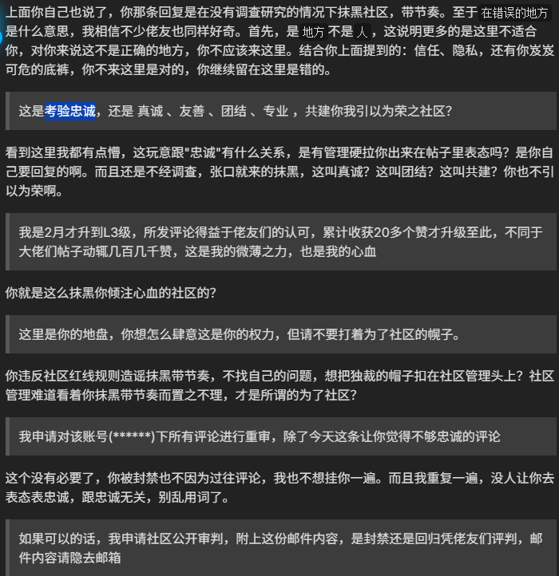
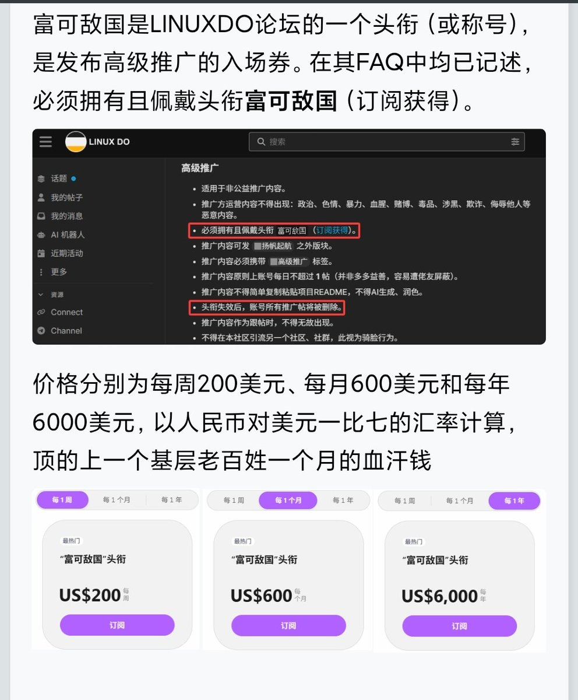
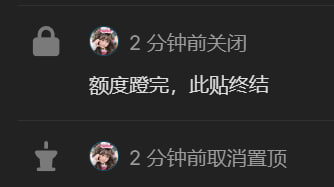
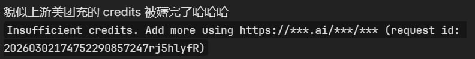

玩AI的肯定十有八九认识LINUX DO这家粉红论坛，一旦有某厂商API凭证泄露，就开始使劲薅🤓
别人传播就没事，我传播就拼了劲攻击我。许多佬和我一样，好不容易从2级升到3级最后“在错误的地方”。
接受群众监督，这并不属于不经调查，张口就来的抹黑。而是给一个兢兢业业，努力了半年的3级佬友扣“抹黑社区，带节奏”的帽子
那我问你：这要人家怎么真诚？怎么团结？还引以为荣？
一会说世外桃源，又刻意营造信息茧房，又当又立。
甚至水印回应站不住脚，那水印肉眼可见甚至盲不了一点，它只是在网页最顶层上了个遮罩，只防截图不防复制。跨站执法那些宣传该站600USD/月富可敌国（花钱买头衔）跑路撇清关系的事，PrivNode的事情处理好了吗？我看你们的LDC积分都通胀了多少回了🤣

别人传播就没事，我传播就拼了劲攻击我。许多佬和我一样，好不容易从2级升到3级最后“在错误的地方”。
接受群众监督，这并不属于不经调查，张口就来的抹黑。而是给一个兢兢业业，努力了半年的3级佬友扣“抹黑社区，带节奏”的帽子
那我问你：这要人家怎么真诚？怎么团结？还引以为荣？
一会说世外桃源，又刻意营造信息茧房，又当又立。
甚至水印回应站不住脚，那水印肉眼可见甚至盲不了一点，它只是在网页最顶层上了个遮罩，只防截图不防复制。跨站执法那些宣传该站600USD/月富可敌国（花钱买头衔）跑路撇清关系的事，PrivNode的事情处理好了吗？我看你们的LDC积分都通胀了多少回了🤣





美团光年之外的 AI 原生浏览器 #Tabbit 内置的 AI 模型凭证被挖出，随后美团充值的 API 额度瞬间被羊毛党耗干净。Linux do 上有网友扒出 API 地址和凭证后将其分享出来，随后大量网友出动将其配置到自己的 #OpenClaw 或其他软件中，这导致美团的额度很快就被薅干净。查看全文：https://t.co/tLXr85npzd https://t.co/RoUYvLtfs3